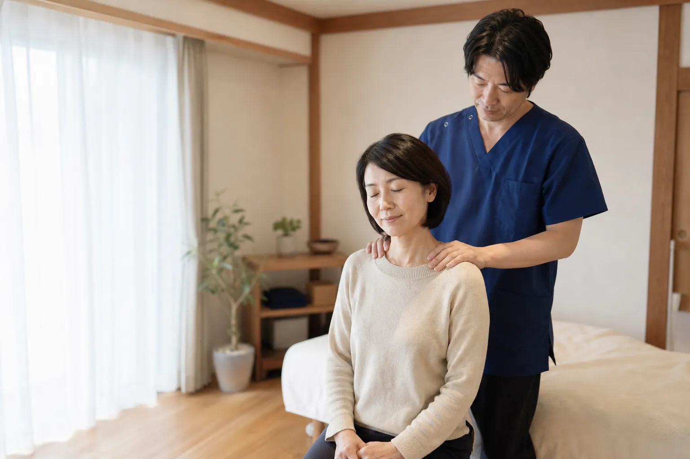
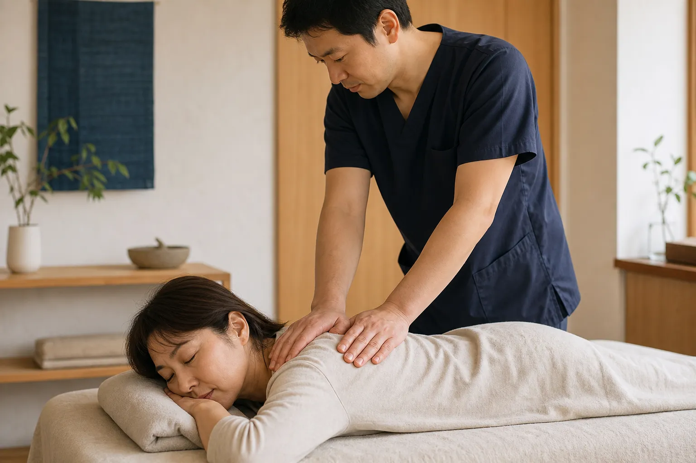
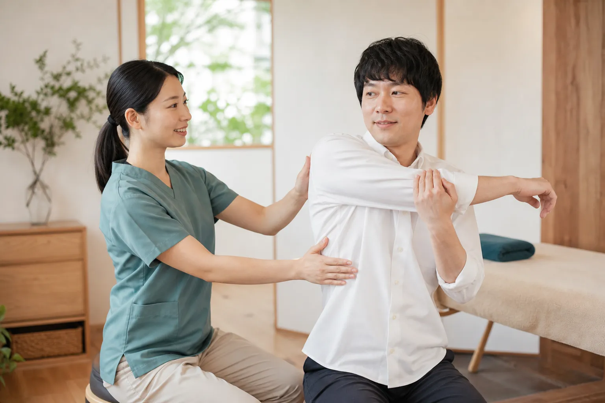
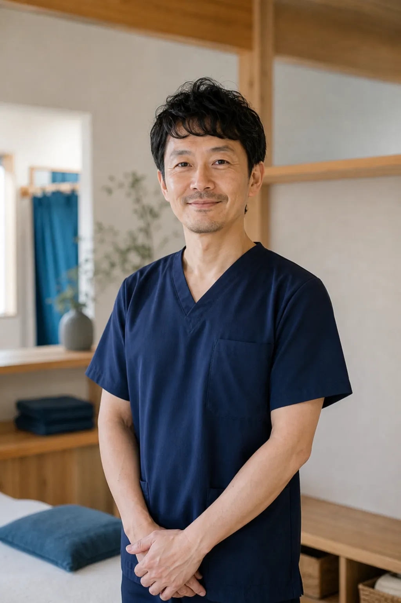
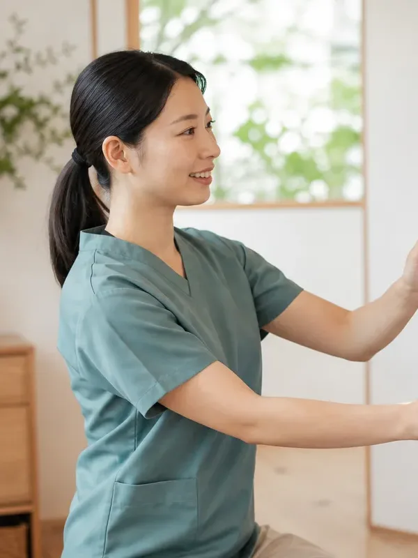
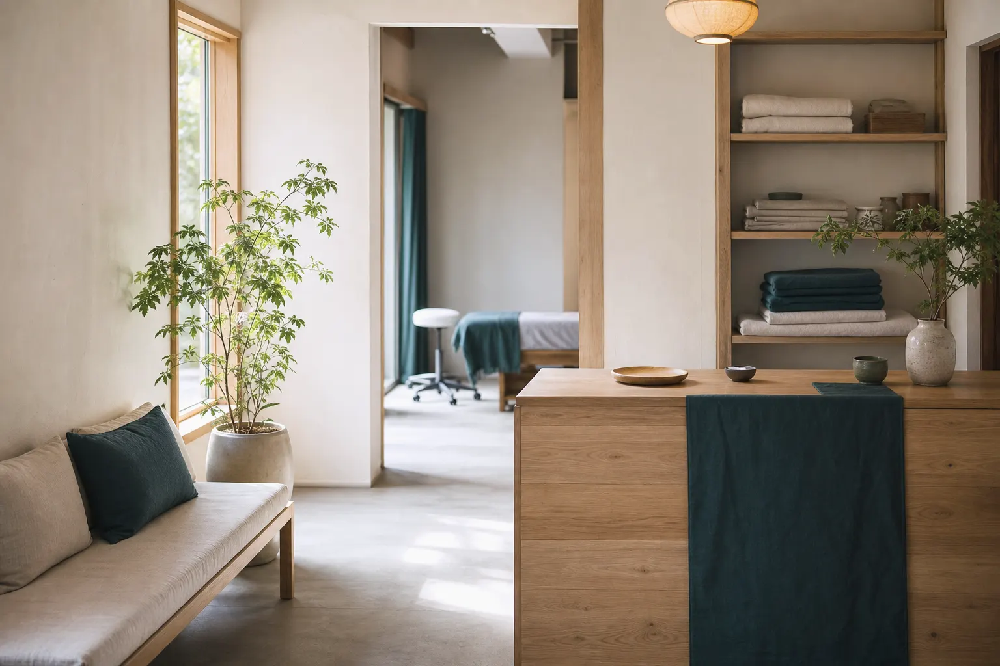
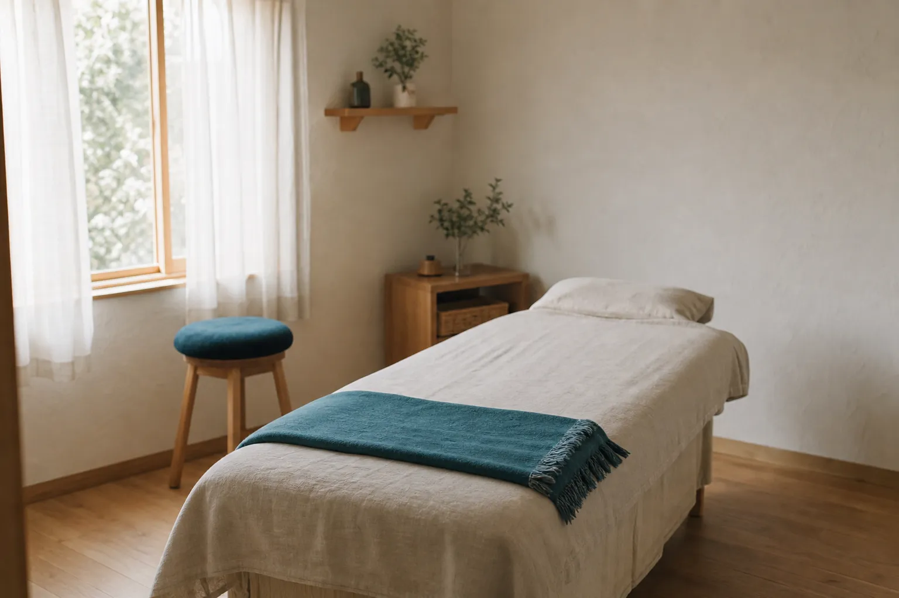

01
まず、よく聞くこと
いつから、どんなときに、どのあたりがつらいのか。お仕事や家事、睡眠のことまで、初回は15分ほどかけてお話を伺います。言葉にしづらい感覚も、思いつくままにお話しください。
肩こり・腰痛・姿勢のお悩みに

初めての方へ
カウンセリング込み
60分6,600円（税込）
名古屋市〇〇区、〇〇駅から徒歩4分。
お話を伺うところから始める、
完全予約制・個室の小さな整体院です。
強く押したり、ボキボキ鳴らしたりはしません。
はじめての方は「初回整体（60分）」をお選びください。
Your Concerns
Our Approach
01
いつから、どんなときに、どのあたりがつらいのか。お仕事や家事、睡眠のことまで、初回は15分ほどかけてお話を伺います。言葉にしづらい感覚も、思いつくままにお話しください。

02
肩がつらいからといって、肩だけを触るわけではありません。立ち姿や歩き方、背骨や骨盤まわりの動きを確かめながら、からだ全体のバランスを見て施術します。力まかせではない、やさしい手技が中心です。

03
からだと過ごす時間のほとんどは、院の外にあります。デスクまわりの工夫や、1日3分でできるストレッチなど、無理なく続けられるセルフケアをその方に合わせてお伝えします。
※整体は医療行為ではありません。強い痛みやしびれがある場合、けがの直後などは、
First Visit
初回は、カウンセリングから施術、セルフケアのご説明まで、
24時間受付
WEBフォームまたはお電話で。ご希望の日時と、気になるところを簡単にお知らせください。
約15分
問診票をご記入いただいたあと、生活のことも含めてお話を伺います。
約5分
立ち姿や前屈・ひねりなどの動きを一緒に確認し、気づいたことをその場でお伝えします。
約30分
力加減はいつでも遠慮なくお伝えください。途中で確認しながら進めます。
約10分
施術で感じたことと、ご自宅でできるケアをお伝えします。次回のご予約は、ご希望の方のみで大丈夫です。
Menu & Price
表示はすべて税込です。
初めての方
60分
6,600円
お話を伺う時間と、施術後のご説明の時間をしっかり取った初回専用のコースです。
45分
5,500円
前回からの変化を伺いながら、全身のバランスを見て施術します。
30分
3,850円
首・肩まわりなど、気になるところを中心に短時間で施術します。
※整体は健康保険の対象外です。
Our Staff

院長
森下 健一Kenichi Morishita
つらさの理由は、

スタッフ
高木 さやかSayaka Takagi
ストレッチやセルフケアの指導を担当しています。女性の施術者をご希望の方は、ご予約時にお知らせください。産後の骨盤まわりのご相談も承っています。
Inside the Clinic
木のぬくもりと、やわらかな光。


FAQ
ありません。当院の施術は、手のひらでゆっくり圧をかけたり、関節をやさしく動かしたりする手技が中心です。力加減はいつでも調整しますので、遠慮なくお伝えください。
動きやすい服装がおすすめですが、お着替え（上下）をご用意していますので、お仕事帰りのスーツやスカートでも大丈夫です。
からだの状態や生活のリズムによって異なるため、一律には決めていません。初回の施術後に、ご予算やご都合も伺ったうえで目安をご相談します。通院を強くおすすめすることはありません。
整体は健康保険の対象外のため、全額自己負担となります。料金は「メニュー・料金」をご覧ください。
まずは主治医の先生にご相談ください。カウンセリングの内容によっては、施術を控えて医療機関の受診をおすすめすることがあります。
はい、大丈夫です。施術室にベビーカーごと入っていただけます。お子さまの様子を見ながら、途中で休憩をはさむこともできます。
Access & Hours
| 時間 | 月 | 火 | 水 | 木 | 金 | 土 | 日 |
|---|---|---|---|---|---|---|---|
| 10:00〜20:00 | ● | ● | ● | 休 | ● | ― | ― |
| 9:00〜17:00 | ― | ― | ― | 休 | ― | ● | ● |
定休日：木曜・祝日 最終受付は終了時刻の60分前です。
地図はポートフォリオ用のため
表示していません
Reservation
WEBフォームからのご予約は24時間受け付けています。内容を確認のうえ、受付時間内にお電話またはメールでご連絡いたします。